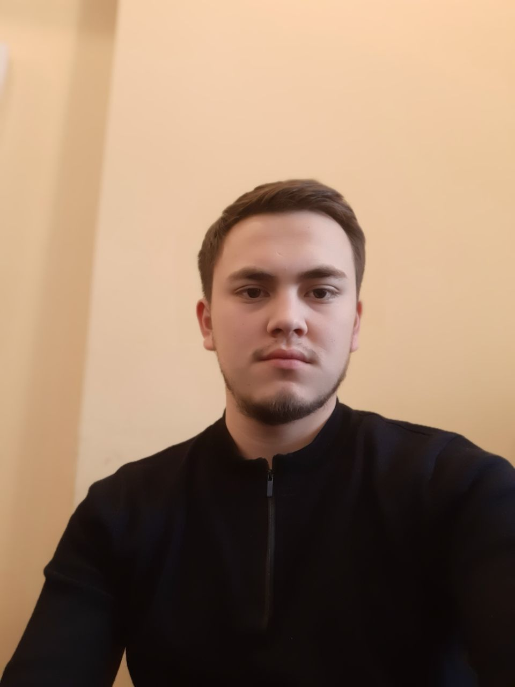

Тураев Бекзод Алишер угли
Джуниор Фронтенд Разрабтчик
- Занятость: полная
- График работы: полный день
- Желанная зарплата: от 400$
Личная информация
- Место Рождения: Сурхандарьинская область, город Термез
- Дата Рождения: 01.03.2003 год
- Пол: мужской
- семейное положение: не женат
Образование и характеристика
- Учебное заведение: Международный Вестминстерский университет в Ташкенте
- Факультет: Бизнес и информационные науки
- Ответственный
- Командный игрок
- Адаптивный к разным условиям
- Владеет тремя языками :
- Русский
- Английский
- Узбекский
Опыт работы
Работал в логистической, аутсорсинговой компании с 2019 по 2021 год.
Последние два года стажировался в комапнии Ай-Теко как фронтенд разработчик.
Мои контакты